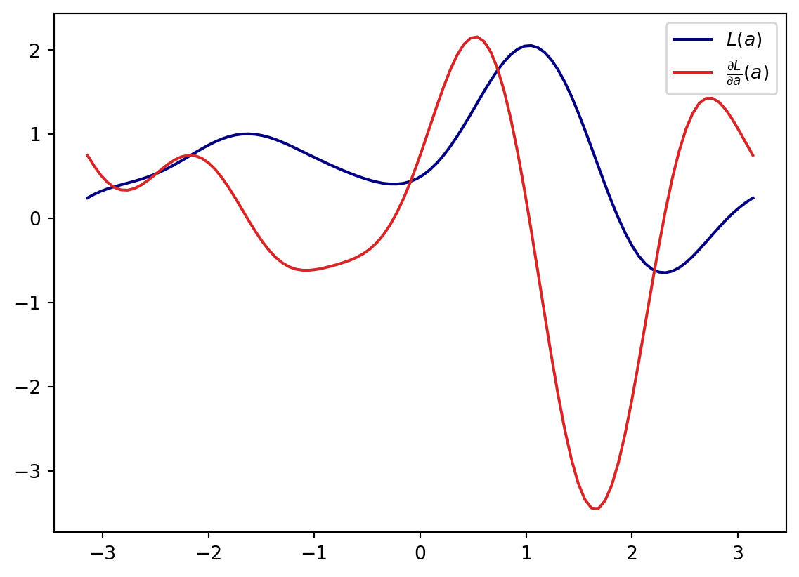

import tequila as tq
H = tq.paulis.X([0,1]) + 0.5*tq.paulis.Z([0,1])
U = tq.gates.Ry("a", 0) + tq.gates.X(1,control=0)
E = tq.ExpectationValue(H=H, U=U)Create some abstract quantum functions with tequila

Installation
if you are on Linux or Mac, you can install tequila directly from the PyPi cloud via
pip install tequila-basicthis installs you the tequila package with only the absolutely necessary dependencies.
Using windows as an operating systems will lead to errors here as the jax library is not supported.
In the future there will be a separate blog entry for windows users, meanwhile see the github readme.
Not necessary but recommended it the installation of a capable simulator for you quantum circuits. Tequila supports the usual suspects, the by far fastest option is however the qualcs simulator that can conveniently be installed as
pip install qulacsDefine an Expectation Value
An expectation value \(E = \langle H \rangle_U\) consists of two parts: 1. a quantum circuit U (a unitary operation expressed as a sequence of unitaries) that defines the wavefunction 2. a qubit Hamiltonian H (an hermitian operator exporessed in Pauli-strings)

note that we have parametrized one of the gates (marked in pink), so that our expectation value becomes a function of this paramteter \[E=f(a).\]
Evaluate the Expectation Value
We can evaluate the expectation value by compiling it to a backend (a simulator or interface to some quantum hardware)
f = tq.compile(E)
evaluated = f({"a":1.0})
print("f(1.0) = {:+2.4f}".format(evaluated))f(1.0) = +1.3415if you have installed qulacs before then tq.compile translated the underlying objects to qulacs. Otherwise another simulator on your system, or the horrible tequila debug simulator was used. You can figure out which simulators you have installed by calling tq.show_available_simualtors. When passing backend="qulacs" to tq.compile you can speficy which backend you want to compile to.
If ever in doubt if the current object is already compiled, just print it
print("abstract expectation value is:")
print(E)
print("compiled function is:")
print(f)abstract expectation value is:
Objective with 1 unique expectation values
total measurements = 2
variables = [a]
types = not compiled
compiled function is:
Objective with 1 unique expectation values
total measurements = 2
variables = [a]
types = [<class 'tequila.simulators.simulator_qulacs.BackendExpectationValueQulacs'>]The printput states that our objects are tq.Objectives with a given number of unique expectation values. More about this now.
Differentiate and Manipulate Expectation Values
The expecation value can be used to define more complicated objects. Here are some examples:
The gradient \[ \frac{\partial }{\partial a } E(a) \] with respect to variable a can be computed as
dE = tq.grad(E,"a")
print(dE)Objective with 2 unique expectation values
total measurements = 4
variables = [a]
types = not compiledand the corresponding object can then be compiled and evaluated in the same way
df = tq.compile(dE)
evaluated = df({"a":1.0})
print("df/da(1.0 = {:+2.4f}".format(evaluated))df/da(1.0 = +0.5403apart from differentiating we can also combine the tq.Objective objects. The final example illustrates most of these possibilities.
Example
Let’s create the function \[ L(a) = \frac{\partial E}{\partial a}(a) E(a)^3 + e^{-\left(\frac{\partial E }{\partial a}(a) \right)^2} \]
L = E**3*dE + (-dE**2).apply(tq.numpy.exp)
l = tq.compile(L)and now let’s have a look how this function and it’s gradient \(\frac{\partial L}{\partial a}\) looks like
Code
import numpy
import matplotlib.pyplot as plt
# get the abstract gradient and compile
dL = tq.grad(L, "a")
dl = tq.compile(dL)
x = list(numpy.linspace(-numpy.pi, numpy.pi, 100))
y0 = [ l({"a":xx}) for xx in x]
y1 = [ dl({"a":xx}) for xx in x]
plt.plot(x,y0, label="$L(a)$", color="navy")
plt.plot(x,y1, label=r"$\frac{\partial L}{\partial a}(a)$", color="tab:red")
plt.legend()
plt.savefig("fig.png")
plt.show()